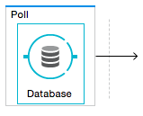
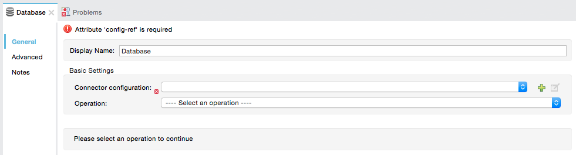
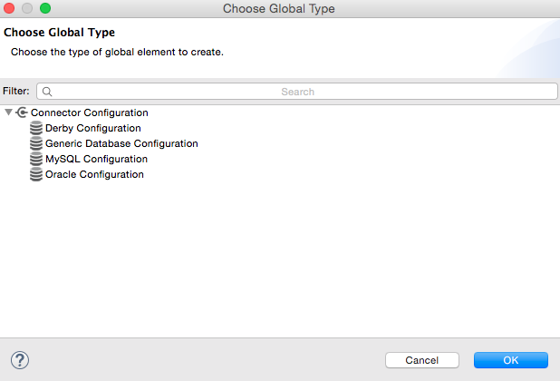
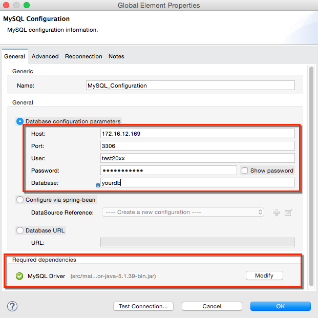
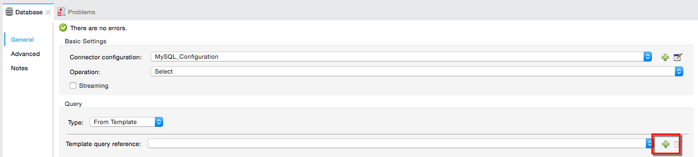
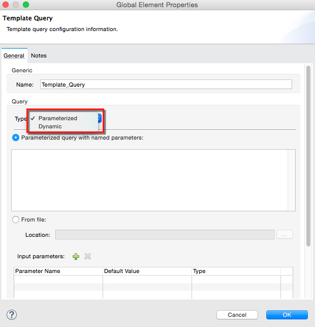

Database Connector
Introduction
The Database connector allows you to connect with almost any Java Database Connectivity (JDBC) relational database with a single interface for the most common database engines. The Database connector allows you to run SQL operations on your database, including Select, Insert, Update, Delete, and even Stored Procedures.
Notes:
-
In Mule 3.7 and newer, you can specify MEL expressions in connector fields. Additional attributes can be configured dynamically depending on the database configuration you use. For more information, see the Fields That Support MEL Expressions section.
-
The Database connector replaces the JDBC connector. As of Mule 3.5.0, the JDBC connector is deprecated.
-
Starting in Mule 3.7, database connector configurations enable the dynamic configuration of some of their connection attributes. This feature enables an application to support multi-tenant scenarios using the same configuration element, and changing the connection attributes based on, for example, information coming from each request.
The Database connector lets you perform predefined queries or dynamically constructed queries. Additionally, the connector allows the use of template queries that are both self-sufficient and customizable. You can also perform multiple SQL requests in a single bulk update. The connector also allows you to perform Data Definition Language (DDL) requests, that alter the data structure rather than the data itself. The Database connector is available with both Mule Community and Mule Enterprise runtimes.
Prerequisites
This document assumes that you are familiar with databases in general and with SQL syntax. Furthermore, to complete the examples presented here, we assume that you have access to the database that you are to connect to, and that you have downloaded the proper database driver for your database.
To use a Database connector in your Mule application, check whether your database engine is supported out-of-the-box.
The database connector currently includes out of the box support for Oracle, MySQL and Derby engines.
All other database engines – including MS SQL – are supported by the Generic Database Configuration option.
Basic Setup Steps
-
Configure a Database connector where you define:
-
Your database’s location and connection details
You may need to add your database driver as a dependency to your app for the connector to work.
-
Advanced connection parameters such as connection pooling
-
-
Configure the operation:
-
Contains the query to perform on the database
-
DataWeave can extract message metadata and assist in transforming data to a different structure.
Supported Operations
The database connector supports the following operations:
-
Select
-
Insert
-
Update
-
Delete
-
Stored Procedure
-
Bulk Execute
-
DDL operations such as CREATE, ALTER, etc.
-
You can run a TRUNCATE query on the database by selecting Update as the operation.
-
To enhance connector performance, verify whether your query is valid for use in Bulk Mode.
Configuring Database Connector
Follow these steps to set up and test a connection to your database by creating a reusable global element for the database connector to reference.
-
Click a database connector building block that you have included in your flow.
You can use the Poll scope to monitor changes to your database and trigger subsequent actions. -
Select the type of database global element to configure by clicking the green plus sign and navigate the dropdown to the applicable database engine. Or edit an existing configuration by clicking the "Edit" icon.
 -
Choose a type of database global element to set up.
(Select Generic Database Configuration if yours is not listed if you are not using an out-of-the-box configuration, i.e. MySQL, Derby, Oracle)
-
For MySQL database connection, you must fill out these fields in the Global Element Properties screen:
-
Host
-
Port
-
User
-
Password
-
Database
-
-
Specify the database engine driver on the Global Element Properties window. In this case, the MySQL Connector/J driver was retrieved from the MySQL Connector/J Download site.
 -
At this point, the database connection should be confirmed via Test Connection button. Click OK when confirmed.
-
Back in the properties window ensure a valid operation and query have been specified for the database connector building block(s) before running your app.
Configuring for Database Engines Supported Out of the Box
Currently, the following database engines are supported out of the box:
-
Oracle
-
MySQL
-
Derby
This section explains how to configure a database connector for use with any of these databases.
Studio Visual Editor
The following tables describe the attributes of each out-of-the-box database connector element that you configure to be able to connect to your database and submit queries to it. For a full list of elements, attributes, and default values, see Database Connector Reference. See also Fields That Support MEL Expressions.
Oracle - Required Attributes
| Required Attribute | Use |
|---|---|
Name |
Use to define a unique identifier for the global Database connector element in your application. |
Host |
Name of host that runs the database. |
Port |
Configures just the port part of the DB URL (and leaves the rest of the default DB URL untouched). |
Database Configuration Parameters |
Use to define the details needed for your connector to actually connect with your database. When you have completed the configuration, click Test Connection… to confirm that you have established a valid, working connection to your database. |
Required dependencies |
Click Add File to add the database driver to your project. |
MySQL - Required Attributes
| Required Attribute | Use |
|---|---|
Name |
Use to define a unique identifier for the global Database connector element in your application. |
Database Configuration Parameters |
Use to define the details needed for your connector to actually connect with your database. When you have completed the configuration, click Test Connection to confirm that you have established a valid, working connection to your database. |
Required dependencies |
Click Add File to add the database driver to your project. |
Derby - Required Attributes
| Required Attribute | Use |
|---|---|
Name |
Use to define a unique identifier for the global Database connector element in your application. |
Database Configuration Parameters |
Use to define the details needed for your connector to actually connect with your database. When you have completed the configuration, click Test Connection to confirm that you have established a valid, working connection to your database. |
Optional Attributes
This section and the next describe the attributes of the element that you can optionally configure to customize some functionality of the global database connector element.
For a full list of elements, attributes and default values, consult the Database Connector Reference.
| See also Fields That Support MEL Expressions. |
Advanced Tab - Optional Attributes
| Optional Attributes | Use |
|---|---|
Use XA Transactions |
Enable to indicate that the created datasource must support extended architecture (XA) transactions. |
Connection Timeout |
Maximum time in seconds that this data source will wait while attempting to connect to a database. A value of zero specifies that the timeout is the default system timeout if there is one; otherwise, it specifies that there is no timeout. |
Transaction isolation |
Define database read issue levels. |
Driver Class Name |
The fully qualified name of the database driver class. |
Advanced Parameters |
Send parameters as key-value pairs to your DB. The parameters that can be set depend on what database software you are connecting to. |
Connection Pooling |
Define values for any of the connection pooling attributes to customize how your Database Connector reuses connections to the database. You can define values for:
|
XML Editor
DB Config <db:generic-config>
| Attributes | Use |
|---|---|
name |
Use to define unique identifier for the global database connector element in your application. |
database host password port user |
Use to define the details needed for your connector to actually connect with your database. When you have completed the configuration, click Test Connection… to confirm that you have established a valid, working connection to your database. See also Fields That Support MEL Expressions. |
useXaTransactions |
Enable to indicate that the created datasource must support extended architecture (XA) transactions. |
Pooling Profile <db:pooling-profile />
| Attributes | Use |
|---|---|
*driverClassName` |
The fully qualified name of the database driver class. |
|
Define values for any of the connection pooling attributes to customize how your Database Connector reuses connections to the database. You can define values for: * Max Pool Size (default: 5) * Min Pool Size (default: 0) * Acquire Increment (default: 1) * Prepared Statement Cache Size (default: 5) * Max Wait Millis: limits how long a client will wait for a Connection (default: 30000) Note: By default, no pool is used. A single connection is created for every request. You need to configure a Pooling Profile to use a pool. |
Connection Properties <db:connection-properties>
| Attribute | Use |
|---|---|
Advanced Parameters |
Send parameters as key-value pairs to your database. The parameters that can be set depend on what database software you are connecting to. Each parameter must be included in a separate tag, enclosed by connection properties like so: |
Configuring for Database Engines Not Supported Out of the Box
All databases that are not configured Database Engines Supported Out of the Box must be added through the generic database installation, and then configured accordingly.
Adding a Generic Database Driver
When using the Generic Database Configuration, you manually import the driver for your database engine into your application as a referenced library, or preferably add it as a Maven dependency. Remember to later specify the fully qualified driver class as one of the connection parameters in the connector configuration. You can use the database connector with any database engine for which you have a driver.
To install the database driver for a generic installation, follow the steps below.
Studio Visual Editor
-
If you haven’t already done so, download the driver for your particular database. For example, the driver for a MySQL database is available to Download online.
-
Drag and drop the driver .jar file from your local drive to the root folder in your project or add the .jar file to the build path of your project via the wizard by right-clicking the project name, selecting Build Path > Configure Build Path….
-
In the wizard that appears, click the Libraries tab, then click Add Jars… (or Add External Jars…, depending on its location.
-
Click OK to save, then OK to exit the wizard. If referencing an external .jar, notice that your project now has a new folder named Referenced Libraries in which your database driver .jar resides.
XML Editor
-
If you haven’t already done so, download the driver for your particular database. For example, the driver for a MySQL database is available for download online.
-
Add the driver’s .jar file to the root folder in your project. In Studio, you can drag and drop the file from your local drive into the project folder.
-
Add the .jar file to the build path of your project.
After adding the database driver for a database engine not supported out of the box, you need to enter the fully qualified name of the driver class in the global element referenced by the database connector. For details, see the next section.
Configuration for Generic Database
Studio Visual Editor
Required: The following table describes the attributes of the global database connector element that you must configure in order to be able to connect, then submit queries to a database. For a full list of elements, attributes and default values, consult the Database Connector Reference. See also Fields That Support MEL Expressions.
| Required Attribute | Use |
|---|---|
Name |
Use to define unique identifier for the global database connector element in your application. |
Configure via spring-bean |
Optional. Configure this database connection by the Spring bean referenced in DataSource Reference. Mutually exclusive with Database URL. |
Database URL |
Optional (can also be configured with Configure via spring-bean). The URL for the database connection. Mutually exclusive with Configure via spring-bean. |
Driver Class Name |
Fully-qualified driver class name of the driver for your database, which must be already imported into your project. You can enter the full name in the empty field or click … to browse the available driver classes. When browsing the available driver classes, type the beginning of the driver class name (which you can check by clicking the driver file under Referenced Libraries in the Package Explorer). Studio displays the list of classes provided by the driver. For a list of driver classes of commonly-used database engines, see Common Driver Class Specifications below. |
Optional: The following table describes the attributes of the element that you can optionally configure to customize some functionality of the global database connector. For a full list of elements, attributes and default values, consult the Database Connector Reference. See also Fields That Support MEL Expressions.
Advanced Tab - Optional Attributes
| Optional Attributes | Use |
|---|---|
Advanced Parameters |
Send parameters as key-value pairs to your DB. The parameters that can be set depend on what database software you are connecting to. |
Connection Timeout |
Define the amount of time a database connection remains securely active during a period of non-usage before timing-out and demanding logging in again. |
Connection Pooling |
Define values for any of the connection pooling attributes to customize how your database connector reuses connections to the database. You can define values for:
|
Use XA Transactions |
Enable to indicate that the created datasource must support extended architecture (XA) transactions. Default: false. |
XML Editor
| Attribute | Use |
|---|---|
DB Config |
|
|
Use to define a unique identifier for the global database connector element in your application. |
|
Use to define the details needed for your connector to actually connect with your database. When you have completed the configuration, click Test Connection… to confirm that you have established a valid, working connection to your database. See also Fields That Support MEL Expressions. |
|
Enable to indicate that the created datasource must support XA transactions. |
| Attribute | Use |
|---|---|
Pooling Profile |
|
|
The fully qualified name of the database driver class. |
|
Define values for any of the connection pooling attributes to customize how your database connector reuses connections to the database. You can define values for:
|
Connection Properties |
|
Advanced Parameters |
Send parameters as key-value pairs to your database. The parameters that can be set depend on what database software you are connecting to. Each parameter must be included in a separate tag, enclosed by connection properties like so: |
Common Driver Class Specifications
When you configure a global element for a generic database server, you need to enter the fully qualified name of the driver class as explained in the Driver Class Name cell in the table above. Below are the driver class names provided by some of the most common database drivers.
| Database | Driver Version | Driver Class Name |
|---|---|---|
PostgreSQL |
postgresql-9.3-1101.jdbc3.jar |
org.postgresql.Driver |
MS-SQL |
sqljdbc4.jar |
com.microsoft.sqlserver.jdbc.SQLServerDriver |
Example Generic Database Connector Configuration for PostgreSQL
Taking PostgreSQL as an example, go to the properties window of the generic database connector configuration, specify the Driver Class Name and the connection URL as parameters: org.postgresql.Driver and jdbc:postgresql://localhost:5432/tictactoe?password=pass&user=yourusername. In XML format, this configuration would be:
<db:generic-config name="Generic_Database_Configuration" url="jdbc:postgresql://localhost:5432/tictactoe?password=pass&user=yourusername" driverClassName="org.postgresql.Driver" doc:name="Generic Database Configuration">
</db:generic-config>Setting up Database Connector Operation
Required: The following table describes the attributes of the Database Connector element that you must configure in order to be able to connect, then submit queries to a database. For a full list of elements, attributes, and default values, consult the Database Connector Reference. See also Fields That Support MEL Expressions.
The Oracle and Derby databases are supported by Mule, but you can only configure operations for these databases using Studio’s XML Editor, not using Studio’s Visual Editor.
| Required Attribute | Use |
|---|---|
Display Name |
Use to define a unique identifier for the Database Connector element in your flow. |
Config Reference |
Use to identify the global database connector element to which the Database Connector refers for connection details, among other things. |
Operation |
Use to instruct the Database Connector to submit a request to perform a specific query in the database:
Run a TRUNCATE query by selecting Update as the operation. |
SQL Statement OR Template Query Reference |
If you chose to use a Parameterized or Dynamic query type, you still need to define the SQL statement itself in the connector’s general settings. If you choose to use a From Template query type, reference the template (defined in a global Template Query element) in which you defined a SQL statement. |
===== Select and Stored Procedure - Advanced Tab Fields
-
Max Rows (applies to SELECT) - Use to define the maximum number of rows your application accepts in a response from a database.
-
Fetch Size - Indicates how many rows should be fetched from the resultSet. This property is required when streaming is true, the default value is 10.
-
Streaming - Enable to facilitate streaming content through the Database Connector to the database. Mule reads data from the database in chunks of records instead of loading the full result set into memory.
===== INSERT - Advanced Tab Fields
-
Auto-generated Keys - Use this attribute to indicate that auto-generated keys should be made available for retrieval.
-
Auto-generated Keys Column Indexes - Provide a comma-separated list of column indexes that indicates which auto-generated keys should be made available for retrieval.
-
Auto-generated Keys Column Names - Provide a comma-separated list of column names that indicates which auto-generated keys should be made available for retrieval.
=== Query Types
Mule makes available three types of queries you can use to execute queries to your database from within an application. The following table describes the three types of queries, and the advantages of using each.
| Query Type/Description | Advantages |
|---|---|
Parameterized (Recommended) - Mule replaces all Mule Expression Language (MEL) expressions inside a query with "?" to create a prepared statement, then evaluates the MEL expressions using the current event so as to obtain the value for each parameter. Refer to the Tips section for tips on writing parameterized query statements. |
Relative to dynamic queries, parameterized queries offer the following advantages:
|
Dynamic - Mule replaces all MEL expressions in the query with the result of the expression evaluation, then sends the result to the database. As such, you are responsible for making sure that any string in your query statement is interpretable by the database (such as quoting strings, data formatting, etc.) The most important disadvantage of using dynamic query statements is security as it leaves the statement open for SQL injection, potentially compromising the data in your database. This risk can be mitigated by for example adding filters on your flow before the DB connector. |
Relative to parameterized queries, dynamic queries offer the following advantages:
|
From Template - Enables you to define a query statement once, in a global element in your application (global Template Query Reference element), then reuse the query multiple times within the same application, dynamically varying specific values as needed. |
Relative to parameterized and dynamic queries, from template queries offer the advantage of enabling you to reuse your query statements. For example, you can define a parameter in your query statement within the template (within the global Template Query Reference element), then, using the query statement in a Database Connector in your flow, instruct Mule to replace the value of the parameter with a value defined within the Database Connector. Read more about how to configure this query type below. |
=== Configuring a Query From a Template
You can use a template to pre-define an SQL query that you can use and reuse in your application’s flows. This SQL query may contain variable parameters, whose values are inherited from database connector elements that you specify. An SQL template can contain a parameterized or a dynamic SQL query.
To utilize the From Template query type, you must first define the template as a global element, then reference the template from within the database connector in your flow.
The following steps describe how to configure your database connector to use a query statement from a template.
Studio Visual Editor
-
From within the Properties Editor of the Database Connector element in your flow, use the dropdown next to Type to select From Template.
-
Click the plus sign next to the Template Query Reference field to create a new Global Template Query Reference element (see image, below).
 -
Studio displays the Global Element Properties window, shown below. Provide a Name for your global element, then select a query type, either Parameterized or Dynamic.
 -
Use the radio buttons to choose the method by which you wish to define the query statement: define it inline, or define from a file.
-
Write your SQL query, which can optionally include variables. If you include a variable, reference it by prepending its name with a colon (:) as in :myvar.
-
Use the plus sign next to Input Parameters to create the variable, assign its default value and optionally select the data type.
-
Click OK to save your template and return to the Properties Editor of the Database Connector in your flow. Studio auto-populates the value of the Template Query Reference field with the name of the global template element you just created.
-
You can optionally add variables and values to the Input Parameters section of the database connector. These variables and their values are valid for all SQL templates. If a variable has been defined here and also in an individual template, then the value specified here takes precedence. In the image below, the variable value has a value of 100. This value is valid for any defined templates (which you can see in the drop-down menu) that reference the variable.

-
Click the blank space in the Studio canvas to save your changes.
Example of Parameterized Query Using Variables

In the image above, the parameterized query inserts the values referenced by variables :ename, :hdate and :dept. The names and values of these variables are set in the Input parameters section below the SQL query. Note that MEL expressions are allowed as values, as in the case of the :hdate field, which retrieves a date stored in a flow variable.
For each variable, the database connector automatically determines and sets the data type for inserting into the database; however, if type resolution fails, you can manually select the data type by clicking in the Type row for the variable. Studio displays a drop-down menu with data types, as shown below.
If the desired data type is not listed, simply type it into the empty field.
XML Editor or Standalone
-
At the top of your project’s XML config file, above all flows, add a db:template-query element. Configure the attributes of the element according to the code sample below.
-
To the db:template-query element, add one of the following child elements, according to the type of query you wish to write: db:parameterized-query or db:dynamic-query. Configure the attribute of the child element in order to define your SQL statement. The statement may include named variables whose values can be dynamically replaced by values defined in individual Database Connector elements. To create a named variable, prepend your desired variable name with a colon (:). For example, to create a named variable for ID, use :id in the query statement of your template. Use the db:in-param child element to define a default value of your named variable, if you wish.
<db:template-query name="Template_Query" doc:name="Template Query"> <db:parameterized-query><![CDATA[insert into simpleemp values (id)]]></db:parameterized-query> <db:in-param name="id" defaultValue="2"/> </db:template-query> -
In the Database connector in your Mule flow, define the values for the variables in your query statement that Mule should use at runtime when executing the query from the template. In other words, define the values you want to use to replace the default value for any variable that you defined within your template query statement.
Input Parameter Attributes
Child element: db:in-param
| Attribute | Description |
|---|---|
|
Name for the input parameter |
|
Input parameter default value |
|
Input parameter data type |
Example of Parameterized Query Using Variables
<db:template-query name="insert_values" doc:name="Template Query">
<db:parameterized-query><![CDATA[INSERT INTO register("employer_name", "hire_date", "dept") VALUES(:ename,:hdate,:dept);]]></db:parameterized-query>
<db:in-param name="ename" defaultValue="Genco Pura Olive Oil"/>
<db:in-param name="hdate" defaultValue="#[flowVar['tdate']]"/>
<db:in-param name="dept" defaultValue="PR"/>
</db:template-query>In the code above, the parameterized query inserts the values referenced by variables for employer name :ename, hire date :hdate and :dept. The names and values of these variables are defined by in-param child elements. Note that MEL expressions are allowed as values, as in the case of the :hdate field, which retrieves a date stored in a flow variable.
For each variable, the database connector automatically determines and sets the data type for inserting into the database; however, you can also manually define the data type by using the type attribute as shown below.
...
<db:in-param name="value" defaultValue="#[flowVar['price']]" type="MONEY"/>
...=== Execute DDL
Data Definition Language (DDL) is a subset of SQL that serves for manipulating the data structure rather than the data itself. This kind of request is used to create, alter, or drop tables.
When using DDL, you can only make dynamic queries (which may or may not have MEL expressions). The following are not supported:
-
parameterized-query
-
bulkMode
-
in-params
-
templates
==== Execute DDL Examples
Studio Visual Editor
Example 1
Example 2
XML Editor
Example 1
<db:execute-ddl config-ref="myDb">
<db:dynamic-query>
truncate table #[tablename]
</db:dynamic-query>
</db:execute-ddl>Example 2
<db:execute-ddl config-ref="myDb">
<db:dynamic-query>
CREATE TABLE emp (
empno INT PRIMARY KEY,
ename VARCHAR(10),
job VARCHAR(9),
mgr INT NULL,
hiredate DATETIME,
sal NUMERIC(7,2),
comm NUMERIC(7,2) NULL,
dept INT)
</db:dynamic-query>
</db:execute-ddl>=== Bulk Mode
The Database Connector can consolidate multiple SQL statements into one through Bulk Mode. Enable this optional feature to INSERT, UPDATE or DELETE data with one query, as opposed to executing one query for every parameter set in a collection. The return type from a bulk mode operation is an update count, not actual data from the database.
==== Notes
-
Bulk mode improves the performance of your applications as it reduces the number of individual query executions your application triggers.
-
Bulk mode for a parameterized query requires at least one parameter. For a dynamic query requires at least one expression.
-
The only memory constraints on this are imposed by the JVM, though some database drivers may have constraints on the number of parameters you can use on a bulk update.
-
The individual SQL statements must be separated by semicolons, and line break characters. All queries must be dynamic. You may include MEL expressions.
-
Instead of writing a statement in the editor, you can reference a file that contains multiple statements that are separated by semicolons and line breaks.
-
if the amount of data is large, to avoid out of memory error use a Batch Commit approach with segmented Inserts in Bulk Mode. You must adjust the size of each commit to avoid memory issues.
For example, imagine you have a query to insert employees into a database table. For each employee, it must insert a last name and an ID. If you enable bulk mode, the Database Connector executes one query to the database to insert the values, rather than once per employee.
==== Examples
Studio Visual Editor
Example 1
Example 2
XML Editor
Example 1
<db:bulk-execute config-ref="myDb">
insert into employees columns (ID, name) values (abc, #[some expression]);
update employees set name = "Pablo" where id = 1; delete from employees where id = 2;
</db:bulk-execute>Example 2
<db:bulk-execute config-ref="dbConfig" source="#[bulkQuery]">
#[payload]
</db:bulk-execute>== Fields That Support MEL Expressions
In Mule version 3.7 and later, the following connector fields support MEL expressions. For a usage example, see Example MEL Expression for Database URL.
| Generic | Derby | Oracle | MySQL |
|---|---|---|---|
|
|
|
|
|
|
|
|
Properties inside |
|
|
|
- |
|
|
|
- |
Properties inside |
|
|
- |
- |
|
|
- |
- |
Properties inside |
Properties inside |
== About Installing the Database Driver
Be sure to install the .jar file for your database driver in your Mule project, then configure the build path of the project to include the .jar as a referenced library.
== Inserting Data Drawn From A Saas Provider Into A Database
Within your query statement, be sure to prepend input values with a "?" to ensure that a query can return NULL values for empty fields instead of returning an error. For example, the query statement below uses information pulled from Salesforce fields BillingCity, BillingCountry, OwnerId, and Phone to populate a table in a database. If the value of any of those fields is blank in Salesforce, such an insert statement would return an error.
insert into accounts values (#[message.payload.BillingCity], #[message.payload.BillingCountry], #[message.payload.OwnerId], #[message.payload.Phone])
However, if you manipulate the statement to include "?"s, then the insert statement succeeds, simply inserting NULL into the database table wherever the value of the Salesforce field was blank.
insert into accounts values (#[message.payload.?BillingCity], #[message.payload.?BillingCountry], #[message.payload.?OwnerId], #[message.payload.?Phone])== Automatically Adding A Parameter For Mysql Database Connections
In this release of Mule, be aware that the global database connector element for MySQL automatically adds a parameter to the connection details to facilitate DataSense’s ability to extract information about the data structure and format. The parameter is: generateSimpleParameterMetadata = true This driver returns "string" as the type for each input parameter (such as could not be the real parameter type).
== Avoiding Complex Mel Expressions In Sql Statements
Because DataSense infers data structure based upon the query statement in a Database Connector, avoid using complex MEL expressions in the query statement, such as MEL expressions that involve functions. DataSense is only able to detect data structure from simple MEL expressions such as #[payload.BillingCity], not #[payload.get(0)]. If the latter, DataSense can only indicate to DataWeave that the structure of the data it is to receive or send is "unknown".
== Enclosing Named Variables In Quotes
Variables in parameterized query statements should not be enclosed in quotes. For example, a user should specify:
select * from emp where id = #[payload.id]== Streaming With The Database Connector
When you enable streaming on your Database connector, you leave the connection, statement, and result set open after execution. Mule closes these resources when either of the following occurs:
-
The result iterator is consumed.
-
There is an exception during the processing of the message (when the result iterator is in the payload of the current message).
-
You enclose the select operation, and the message processors using the iterator, inside a transactional scope. The transactional scrope closes the transaction and there is no need to consume the iterator.
Trying to consume the iterator after closing the transaction causes an error.
== JDBC User-Defined Data Types
In Mule 3.6 and later, you can use user-defined data types with the Database connector. This feature provides the ability to use JDBC supported types in a query; for example, array, struct, and other types.
To use a JDBC data type, specify the type in the database configuration by the name of the type, along with type ID corresponding to the structured data type.
See the list of supported types.
Here in the example below you can see java.sql.STRUCT is referenced using ID of 2002, and java.sql.ARRAY as 2003:
<db:oracle-config name="dbConfig" url="..." user="..." password="...">
<db:data-types>
<db:data-type name="CONTACT_DETAILS" id="2002"/>
<db:data-type name="CONTACT_DETAILS_ARRAY" id="2003"/>
</db:data-types>
</db:oracle-config>=== Struct Type
If you created a type in your database using the syntax CREATE TYPE xyz AS OBJECT you have created a struct. The database connector understands this as java.sql.Struct. In order to obtain the information about the struct, use MEL to invoke the getAttributes method of this Java type.
=== Array Type
For array values, the connector returns java.sql.Array. In order to obtain the corresponding Java array, invoke the getArray method on the java.sql.Array instance. This requires an open connection to the database, which means that the query returning the array must be executed inside a transactional scope or using streaming, checking the box in the connector properties pane.
The value returned in a result set can be used as an input value in another query. You can mine into the result set using MEL and or the For Each component. For example, this MEL expression, #[payload[0]['resultsetID']] would give the first row. Omit the [0] index to get the whole result set.
=== Passing User-Defined Data Types to Stored Procedure
To pass a user-defined data type to a stored procedure, the data type should be specified in the database configuration with a number id identifying the JDBC type it conforms to. The parameter you pass to the stored procedure should be referenced by the name of the data type:
<db:oracle-config name="Oracle_Configuration" url="jdbc:oracle:thin:@54.175.245.218:1581:xe" user="user" password="4321" >
</db:oracle-config>
<db:data-type name="INtypename" id="12"/>
<!-- VARCHAR id=12 -->
<db:data-type name="OUTtypename" id="2002"/>
<!-- STRUCT id=2002 -->
</db:data-types>
...
<db:stored-procedure config-ref="Generic_Database_Configuration" doc:name="Database">
<db:parameterized-query><![CDATA[CALL storedprocfnc(:INtypename,:OUTtypename);]]></db:parameterized-query>
<db:in-param name="INtypename" value="#[payload]"/>
<db:out-param name="OUTtypename" />
</db:stored-procedure>== Example MEL Expression for Database URL
The following example shows the Mule 3.7 and newer change where you can specify a MEL expression in the Database URL field. See also Fields That Support MEL Expressions.
<mule xmlns="http://www.mulesoft.org/schema/mule/core"
xmlns:xsi="http://www.w3.org/2001/XMLSchema-instance"
xmlns:db="http://www.mulesoft.org/schema/mule/db"
xsi:schemaLocation="http://www.mulesoft.org/schema/mule/core http://www.mulesoft.org/schema/mule/core/current/mule.xsd
http://www.mulesoft.org/schema/mule/db http://www.mulesoft.org/schema/mule/db/current/mule-db.xsd">
<db:derby-config name="dynamicDbConfig" url="#[dataSourceUrl]" driverClassName="org.apache.derby.jdbc.EmbeddedDriver"/>
<flow name="defaultQueryRequestResponse">
<inbound-endpoint address="vm://testRequestResponse" exchange-pattern="request-response"/>
<set-variable variableName="dataSourceUrl" value="jdbc:derby:muleEmbeddedDB;create=true"/>
<db:select config-ref="dynamicDbConfig">
<db:parameterized-query>select * from PLANET order by ID</db:parameterized-query>
</db:select>
</flow>
</mule>== See Also